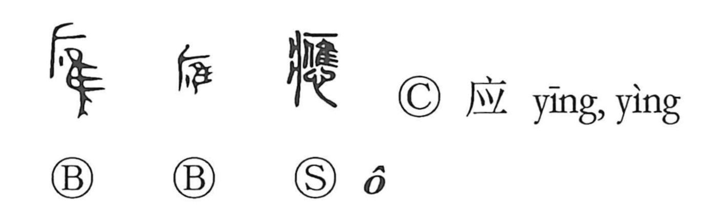

応

Kun: kotaeru, masani | On: ou
to respond ・ to answer ・ to comply
Explanation
応 abbreviates 應, combining 心, the heart, with 䧹 as its phonetic. 䧹 pictures a hawk held against a person's breast and concerns hawk hunting used to ask for a divine response.
The result of the hunt reveals the god's intention. A comparable divinatory hunt in Japan was called ukeigari. The essential relation is between an inquiry and the answer received: the deity responds, and the outcome may agree with what the questioner has sought.
From that response come answering, corresponding, receiving, and acting in accordance with something. Agreement also gives following or yielding. The grammatical ‘should’ or ‘ought to’ develops the fitting action that answers a situation's demand.